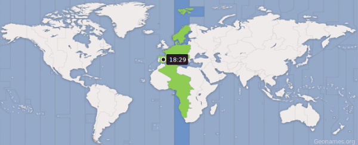
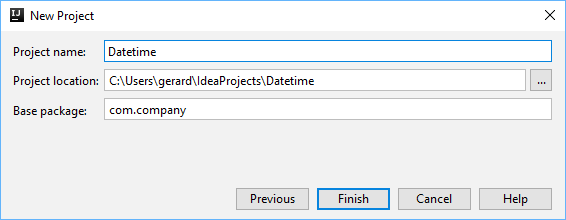

L'objectiu d'aquest CodeLab és utilitzar la API
Per als mateixos valors d'entrada, un algorisme sempre genera els mateixos valors de sortida. Això canvia quan entren en joc els valors indeterminats, com poden ser la data i hora (que canvia en cada execució de l'algorisme) o els valors aleatoris.
El temps sembla un tema senzill; fins i tot un rellotge barat pot proporcionar una data i una hora bastant exactes. No obstant això, amb un examen més detallat, ens adonem de les subtils complexitats i de molts factors que afecten la comprensió del temps. Per exemple, el resultat d'afegir un mes al 31 de gener és diferent per a un any de traspàs que per a altres anys. Les zones horàries també afegeixen complexitat. Per exemple, un país pot entrar i sortir de l'horari d'estiu un o més copa a l'any o pot saltar l'horari d'estiu completament durant un any.
Quan es desenvolupen aplicacions, molt sovint es necesiten nombres aleatoris. Per exemple en la programació de molts jocs, aplicacions de criptografia, per a usar com identificadors, etc.
Java proporciona suport per a la generació de nombres aleatoris a través de la classe
En aquest CodeLab veurem com tenir en compte aquests valors.
Inicia IntelliJ i crea un nou projecte anomenat



La classe
Vegem un exemple:
System.out.printf("now: %s%n", LocalDateTime.now()); System.out.printf("Apr 15, 1994 @ 11:30am: %s%n", LocalDateTime.of(1994, Month.APRIL, 15, 11, 30)); System.out.printf("6 months from now: %s%n", LocalDateTime.now().plusMonths(6)); System.out.printf("6 months ago: %s%n", LocalDateTime.now().minusMonths(6));
La llista completa de mètodes que proporciona la classe
Aquí en destaquem aquestes:
Obté la data-hora actuals | |
Obté la data-hora especificades | |
Obté la data-hora a partir d'un text en base a un format | |
Compara dues data-hores | |
Comprova si la data-hora és posterior a una altra | |
Comprova si la data-hora és anterior a una altra | |
Calcula difèrencia entre la data-hora i una altra, en les unitats especificades (anys, mesos, dies, hores, minuts, segons,...) | |
Obté el dia del mes de la data-hora | |
Obté el mes de la data-hora | |
Obté l'any de la data-hora | |
Obté l'hora de la data-hora | |
Obté els minuts de la data-hora | |
Obté els segons de la data-hora | |
Resta a la data-hora un nombre de dies | |
Resta a la data-hora un nombre de mesos | |
Resta a la data-hora un nombre d'anys | |
Resta a la data-hora un nombre d'hores | |
Resta a la data-hora un nombre de minuts | |
Resta a la data-hora un nombre de segons | |
Suma a la data-hora un nombre de dies | |
Suma a la data-hora un nombre de mesos | |
Suma a la data-hora un nombre d'anys | |
Suma a la data-hora un nombre d'hores | |
Suma a la data-hora un nombre de minuts | |
Suma a la data-hora un nombre de segons |
Obtenir data-hora actuals
System.out.printf("now: %s%n", LocalDateTime.now());
LocalDateTime dataHoraActual = LocalDateTime.now(); System.out.printf("now: %s%n",dataHoraActual);
Amb format específic:
DateTimeFormatter formatter = DateTimeFormatter.ofPattern("d-M-y H.m.s"); String date = formatter.format(LocalDateTime.now());
Obtenir data i hora específica
LocalDateTime deuMaigDosmilUnaTresDos = LocalDateTime.of(2000, Month.APRIL, 1, 3, 2);
Obtenir data-hora a partir d'un string
És necessari definir el format en que en que tenim la data-hora:
String datahoraText = "1/12/2019 1:20:59"; DateTimeFormatter formatter = DateTimeFormatter.ofPattern("d/M/y H:m:s"); LocalDateTime datahora = LocalDateTime.parse(datahoraText, formatter);
Obtenir parts d'una data-hora
System.out.println( ara.getDayOfMonth() + " " + ara.getMonth() + " " + ara.getYear() + " " + ara.getHour() + " " + ara.getMinute() + " " + ara.getSecond() );
Manipular una data-hora
LocalDateTime dh = LocalDateTime.of(2020, 1, 1, 12, 35, 59); System.out.println(dh); dh = dh.plusMonths(2); System.out.println(dh); dh.plusYears(1000); // Atencio: no hem modificat 'dh' System.out.println(dh); // dh = dh.minusSeconds(10000000); System.out.println(dh);
Comparar data-hora
Anterior o posterior
String datahoraText1 = "1/12/2000 0:0:0"; String datahoraText2 = "1/12/2020 0:0:0"; DateTimeFormatter formatter = DateTimeFormatter.ofPattern("d/M/y H:m:s"); LocalDateTime datahora1 = LocalDateTime.parse(datahoraText1, formatter); LocalDateTime datahora2 = LocalDateTime.parse(datahoraText2, formatter); System.out.println(datahora1.isAfter(datahora2)); System.out.println(datahora1.isBefore(datahora2));
Diferència entre dates
LocalDateTime fromDateTime = LocalDateTime.of(1984, 12, 16, 7, 45, 55); LocalDateTime toDateTime = LocalDateTime.of(2014, 9, 10, 6, 40, 45); long years = fromDateTime.until( toDateTime, ChronoUnit.YEARS); fromDateTime = fromDateTime.plusYears( years ); long months = fromDateTime.until( toDateTime, ChronoUnit.MONTHS); fromDateTime = fromDateTime.plusMonths( months ); long days = fromDateTime.until( toDateTime, ChronoUnit.DAYS); fromDateTime = fromDateTime.plusDays( days ); long hours = fromDateTime.until( toDateTime, ChronoUnit.HOURS); fromDateTime = fromDateTime.plusHours( hours ); long minutes = fromDateTime.until( toDateTime, ChronoUnit.MINUTES); fromDateTime = fromDateTime.plusMinutes( minutes ); long seconds = fromDateTime.until( toDateTime, ChronoUnit.SECONDS); System.out.println( years + " years " + months + " months " + days + " days " + hours + " hours " + minutes + " minutes " + seconds + " seconds.");
Per a generar nombres aleatoris, crea en primer lloc una instància de la classe
Fem una prova:
import java.util.Random; public class Main { public static void main(String[] args) { Random random = new Random(); int aleatoriEnter = random.nextInt(); double aleatoriDouble = random.nextDouble(); float aleatoriFloat = random.nextFloat(); boolean aleatoriBoolean = random.nextBoolean(); long aleatoriLong = random.nextLong(); System.out.println(aleatoriEnter); System.out.println(aleatoriDouble); System.out.println(aleatoriFloat); System.out.println(aleatoriBoolean); System.out.println(aleatoriLong); } }
Podem veure que en cada execució del programa el valor de les variables canvia aleatòriament.
La crida sense paràmetres als mètodes
Dintre d'un rang
Per a establir un límit superior, al rang de valors que es generen, podem passar com a parámetre aquest límit.
Per exemple, la crida a
int aleatoriEnter = random.nextInt(10);
fa que el valor generat sigui més petit que
Per a establir un límit inferior i un superior:
int inferior = 4; int superior = 15; int aleatoriEnter = random.nextInt(superior-inferior)+inferior;
fa que el valor generat sigui major o igual a
String aleatori
Per a generar un String aleatori tenim diverses opcions.
Una opció és generar un String amb caràcters entre un rang ASCII:
int inferior = 97; // letter 'a' int superior = 122; // letter 'z' int targetStringLength = 10; Random random = new Random(); String generated = ""; int generatedLength = 10; for (int i = 0; i < generatedLength; i++) { int characterCode = random.nextInt(superior-inferior)+inferior; generated += (char) characterCode; } System.out.println(generated);
Una altra opció és predefinir els possibles caracters que ha de tenir l'String:
Random random = new Random(); String upper = "ABCDEFGHIJKLMNOPQRSTUVWXYZ"; String lower = upper.toLowerCase(); String digits = "0123456789"; String allChars = upper+lower+digits; String generated =""; int generatedLength = 10; for (int i = 0; i < generatedLength; i++) { generated += allChars.charAt(random.nextInt(allChars.length())); } System.out.println(generated);
La data-hora i els nombres aleatoris són fonamentals en la majoria d'aplicacions. Aquí no obstant, farem una aplicació una mica menys seriosa 😉.
import javax.swing.*; import java.awt.*; import java.awt.event.KeyEvent; import java.io.IOException; import java.time.LocalDateTime; import java.time.format.DateTimeFormatter; import java.util.Random; public class Main { public static void main(String[] args) throws Exception { Random random = new Random(); Robot robot = new Robot(); DateTimeFormatter formatter = DateTimeFormatter.ofPattern("d-M-y H.m.s"); String upper = "ABCDEFGHIJKLMNOPQRSTUVWXYZ"; String lower = upper.toLowerCase(); String digits = "0123456789"; String allChars = upper+lower+digits; Runtime.getRuntime().exec("notepad.exe"); while(true) { Thread.sleep(random.nextInt(1000)); String date = formatter.format(LocalDateTime.now()); String text = ""; int generatedLength = random.nextInt(25); for (int i = 0; i < generatedLength; i++) { text += allChars.charAt(random.nextInt(allChars.length())); } for (int i = 0; i < date.length(); i++) { robot.keyPress(KeyStroke.getKeyStroke(date.charAt(i),0).getKeyCode()); Thread.sleep(random.nextInt(300)); } robot.keyPress(KeyEvent.VK_SPACE); for (int i = 0; i < text.length(); i++) { robot.keyPress(KeyStroke.getKeyStroke(text.charAt(i),0).getKeyCode()); Thread.sleep(random.nextInt(100)); } robot.keyPress(KeyEvent.VK_ENTER); } } }